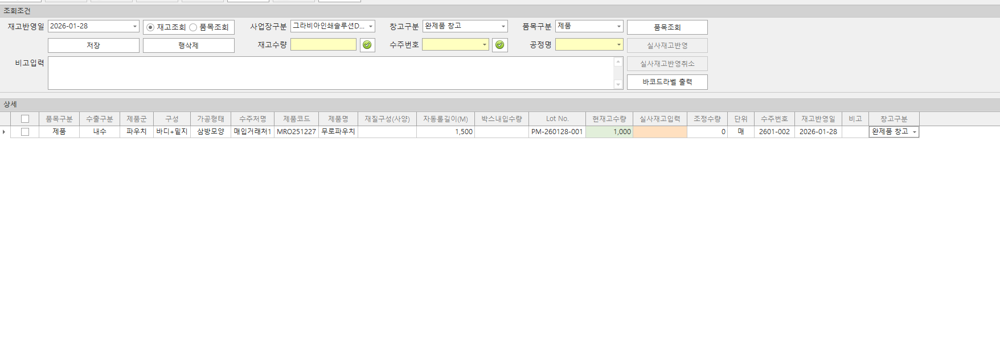
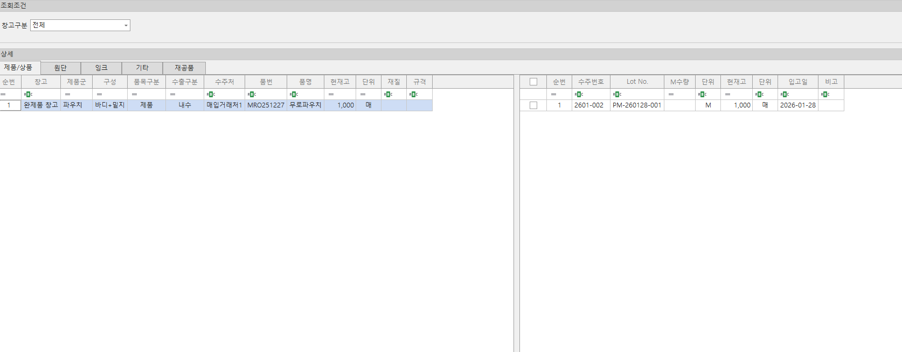
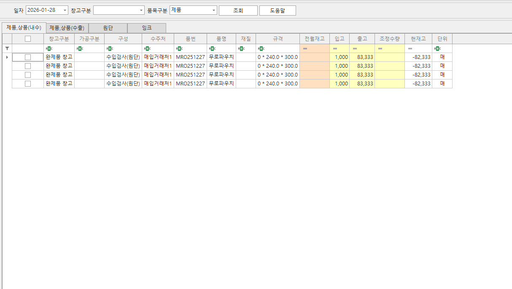

재고 관리
자재와 완제품 재고를 실시간으로 파악해 재고 과부족을 예방합니다.
재고 관리 화면

재고조정
- 창고별 재고 현황을 확인하고 조정 또는 초기재고 등록을 할 수 있습니다.
- 로트 또는 품목 단위로 재고를 조정할 수 있습니다.

현재고현황
- 품목 구분별 현재고 현황을 확인할 수 있습니다.
- 로트별 재고를 세분화 하여 확인할 수 있습니다.

재고수불내역
- 재고수불내역을 조회할 수 있습니다.
품목별재고수불부
- 품목별 세부 재고 수불 내역을 확인할 수 있습니다.
- 수불내역별 재고 수량을 확인할 수 있고 기초재고와 기말재고를 확인할 수 있습니다.